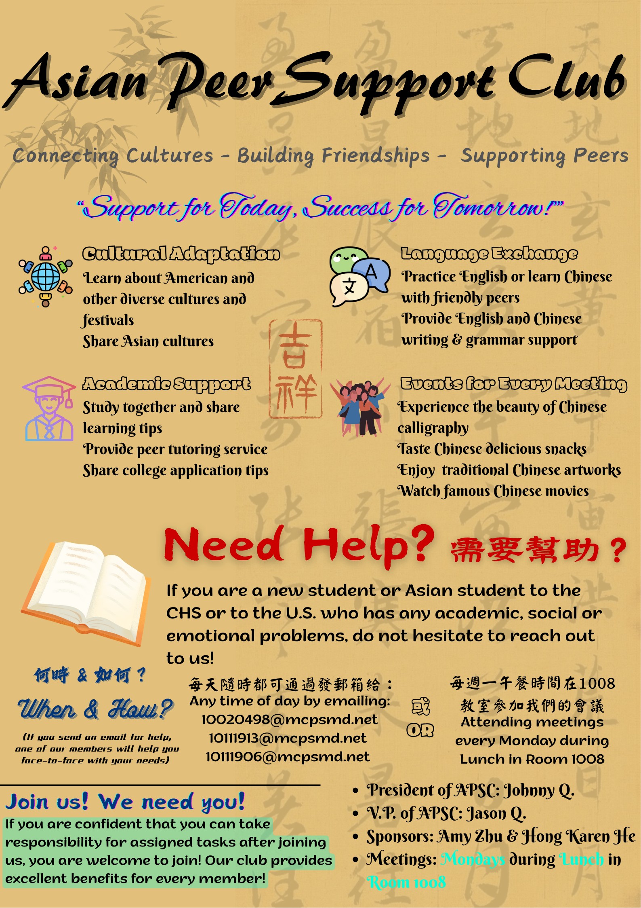

About Our Club
The Asian Peer Support Club (APSC) is dedicated to fostering a supportive community for Asian students. Our mission is to provide a safe space for sharing experiences, cultural exchange, and personal growth. We organize regular meetings, workshops, and social events to promote understanding and collaboration among members.
Our club is open to all students who are interested in learning more about Asian cultures and building meaningful connections. We believe in the power of peer support and strive to create an inclusive environment where everyone feels valued and heard.
About Our Team
Our team currently consists of 6 students from Clarksburg High School, spanning freshmen, sophomores, juniors, and seniors. All of them are fluent in both Chinese and English, with a strong understanding of Chinese culture. They’re eager to share traditional Chinese culture with the world, while also supporting new Chinese immigrants in adapting to their new life and academic environment—whether academically, socially, or emotionally.
Below is an introduction to our six team members.

Johnny Qiao
Jason Qiao
Vicky Zhou
Vincent Zhuo
Ziye Zhou
Jinxi Zheng
If you're interested in joining the Asian Peer Support Club, please reach out to us via our contact page or attend one of our meetings. We welcome new members and look forward to meeting you!